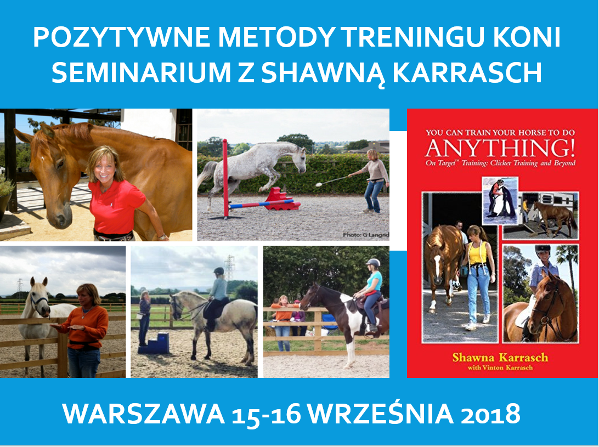

POZYTWNE METODY SZKOLENIA KONI
zapisz się już dziś!
Data: 15-16 września 2018
Prowadzący: Shawna Karrasch, USA
Miejsce: Warszawa lub okolice Warszawy (dokładny adres zostanie potwierdzony po oszacowaniu liczby uczestników)
Uczestnictwo w charakterze obserwatora:
300 zł/jeden dzień (sobota)
450 zł/dwa dni – do 31 lipca 2018
400 zł/jeden dzień (sobota)
600 zł/dwa dni – od 1 sierpnia 2018
Uczestnictwo z koniem:
600 zł/dwa dni – do 30 czerwca 2018
800 zł/dwa dni – od 1 lipca 2018
Wydarzenie na Facebooku:
- Cena obejmuje poczęstunek – dwie przerwy kawowe i obiad.
- Seminarium będzie tłumaczone z języka angielskiego na polski symultanicznie, jeśli liczba uczestników przekroczy 100 osób. W przypadku niższej liczby uczestników zapewniamy tłumaczenie konsekutywne.
- Uczestnicy otrzymają świadectwa udziału w seminarium.
POZYTWNE METODY SZKOLENIA KONI
Pierwsze w Polsce seminarium z Shawną Karrasch, trenerką zwierząt specjalizującą się w szkoleniu ssaków morskich i koni, poświęcone komunikacji i budowaniu więzi z koniem.
SOBOTA, 2 czerwca 2018 EMOCJE U KONI
Program 15 września
9.00-12.00 SEMINARIUM TEORETYCZNE
- ABC analizy zachowania.
- Emocje jako podstawa skutecznej nauki.
- Metody treningowe wykorzystujące wzmocnienie dodatnie.
- Praca z ziemi i początki pracy pod siodłem.
- Bezstresowy transport.
- Trening pielęgnacyjny i medyczny koni.
- Praca z koniem płochliwym.
14.00 - 17.00 POKAZ TRENINGU KONI
Podczas tej sesji Shawna Karrasch pokaże techniki pracy z czterema końmi o różnych temperamentach i poziomie wyszkolenia. Zaprezentowane ćwiczenia będą zależały od potrzeb koni i ich właścicieli.
NIEDZIELA, 16 WRZEŚNIA 2018
9.00-12.00 I 14.00 -17.00 WARSZTATY
Właściciele koni pod okiem Shawny Karrasch będą pracować ze swoimi zwierzętami.
Shawna Karrasch
Pracę trenerską rozpoczynała w oceanarium w San Diego . Po 10 lat szkolenia delfinów, lwów morskich i orek przerzuciła się na trening koni, zaskoczona, że w świecie jeździeckim nikt nie stosuje metod opartych na wzmocnieniu dodatnim. Jej współpraca ze startującą w skokach przez przeszkody Beezie Madden szybko przyniosła świetne efekty. Konie zawodniczki stały się uważniejsze, odważniejsze, i co szczególnie ważne, niezwykle chętnie wykonywały stawiane przed nimi zadania. Obecnie Shawna Karrasch szkoli zwolenników pozytywnego treningu koni i opiekunów zwierząt w ogrodach zoologicznych na całym świecie. Na stałe mieszka w Santa Fe i prowadzi kursy w ośrodku Terra Nova, specjalizującym się w przygotowywaniu koni do WKKW metodami pozytywnymi.